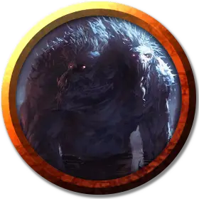

Йестаброд
Yestabrod
Большой Монстр, хаотично-злой, именной НИП

Класс Доспеха 15 (природный доспех)
Хиты 75 (10к10 + 20)
Скорость 30 футов
| мод | спас | ||
|---|---|---|---|
| СИЛ | 12 | +1 | +1 |
| ЛОВ | 10 | +0 | +0 |
| ТЕЛ | 14 | +2 | +2 |
| мод | спас | ||
|---|---|---|---|
| ИНТ | 13 | +1 | +1 |
| МДР | 15 | +2 | +2 |
| ХАР | 10 | +0 | +0 |
Иммунитет к урону яд
Иммунитет к состояниям отравление
Чувства тёмное зрение 120 футов, пассивное Восприятие 12
Языки Бездны, Телепатия 60 фт.
Опасность 4 (1100 опыта)
Бонус мастерства +2
Особенности
Легендарное сопротивление (1/день). Если Йестаброд проваливает спасбросок, он может выбрать вместо этого успех.
Действия
Удар. Рукопашная атака оружием: +3 к попаданию, досягаемость 5 футов, одна цель. Попадание: Дробящий урон 8 (3к4 +1) плюс урон ядом 7 (3к4).
Едкие споры (1/день). Миконид распространяет споры в конусе размером 30 футов. Каждое существо в этом конусе должно преуспеть в спасброске Ловкости 12 или будет получать урон кислотой 1к6 в начале каждого хода миконида. Существо может повторять спасбросок в конце своего хода, завершая действие эффекта при успехе.
Заразные споры (1/день). Миконид распространяет споры, образующие облако в форме сферы радиусом 10 футов, с центром на нем, и оно существует в течение 1 минуты. Любое существо из плоти и крови, находящиеся в облаке при его появлении, или входящие в его позднее, должны совершить спасбросок Телосложения Сл 12. При успешном спасброске существо не может быть заражено этими спорами в течение следующих 24 часов. При провале существо заражено спорами Заггтмой и, кроме всего прочего, получает случайную форму постоянного безумия (определяется броском по таблице Безумие Заггтмой в приложении D), оканчивающегося только в том случае, если существо излечивается от болезни или умирает.
Будучи зараженным этой болезнью, существо не может быть заражено снова и должно повторять спасбросок каждые 24 часа, оканчивая действие болезни при успехе. При провале, над телом существа постепенно обретают контроль растущие в нем грибы, и после трех провалов спасброска существо умирает, а затем оживает споровым слугой, если оно относится к тому типу существ, которые могут быть споровыми слугами (см. раздел «Микониды»).
Легендарные действия
Йестаброд может совершать два легендарных действия на выбор из представленных ниже. Лишь одно легендарное действие может быть совершено единовременно, и лишь в конце хода другого существа. Йестаброд восстанавливает истраченные легендарные действия в начале своего хода.
Взрыв трупа. Кровь, внутренности и кислота выплескивается из трупа, находящегося в пределах 20 футов от Йестаброда. Существа, находящиеся на расстоянии 10 футов от трупа, должны совершить успешный спасбросок Ловкости Сл 12 или получить урон кислотой 7 (2к6).
Мерзкое поглощение. Йестаброд поглощает гниль из трупа, находящегося на расстоянии 5 футов от него, восстанавливая 1к8 + 2 хитов.
Описание
См. дополнительно статью: "Бестиарий: Микониды"